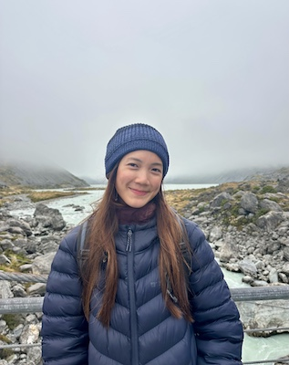

|  | Halimah Binte RazaliResearch Assistant
Email: halimah.razali@(AT)nus.edu.sg |
Research Interests
Coral reef ecology, marine biodiversity, climate resilience, marine microbes
Background
My first step into the world of marine ecology began as a research assistant in a marine microbial lab, where I worked extensively with marine microbes and viruses across diverse environments, from equatorial waters to deep sea ecosystems. My research included isolating and characterising phytoplankton and RNA viruses using metagenomic and metatranscriptomic approaches, as well as understanding virus-host dynamics under simulated deep sea conditions to understand their life cycles. Over time, I developed a strong interest in coral reef ecology, particularly in the intersection between microbial communities and reef systems. I began honing my skills in coral aquaculture and microbial pathogen detection.
Current Research
My current research lies in coral reef ecology, with a focus on macroalgae–coral interactions, epiphytic and epifaunal biodiversity, and the sustainability and ecological impacts of seaweed (Sargassum) harvesting. With the A2O team, I aim to investigate the ecological roles of Sargassum-associated communities in tropical reef systems. Our goal is to better understand how targeted seaweed removal influences coral recruitment, reef resilience and the broader reef associated biodiversity.
Academic and Employment History
James Cook University, Australia (B.Sc)
Research Assistant, Asian School of the Environment, Nanyang Technological University
Diploma in Marine Science and Aquaculture, Republic Polytechnic